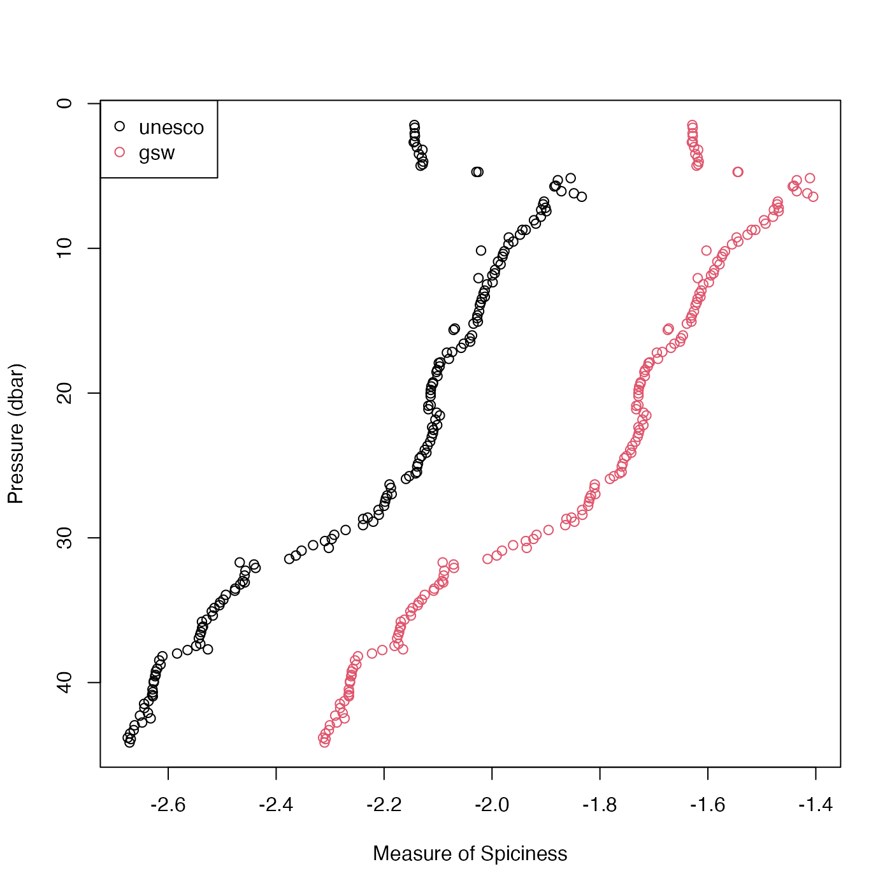

Compute seawater "spice", also called "spiciness" (a variable orthogonal
to density in TS space), in either of two formulations, depending on
the value of the eos argument. If eos="unesco" then
Flament's (reference 1) formulation is used. If eos="gsw"
then the Gibbs SeaWater formulation for "spiciness0" is used
(see reference 2).
swSpice( salinity, temperature = NULL, pressure = NULL, longitude = NULL, latitude = NULL, eos = getOption("oceEOS", default = "gsw") )
| salinity | either salinity (PSU) (in which case |
|---|---|
| temperature | in-situ temperature (\(^\circ\)C) on the
ITS-90 scale; see “Temperature units” in the documentation for
|
| pressure | Seawater pressure (dbar) (only used if |
| longitude | longitude of observation (only used if |
| latitude | latitude of observation (only used if |
| eos | Character value specifying the equation of state,
either |
Flament-formulated spice \(kg/m^3\) if eos is "unesco"
or surface-referenced GSW spiciness0 \(kg/m^3\) if eos is "gsw",
the latter provided by gsw::gsw_spiciness0(), and hence aimed
at application within the top half-kilometre of the ocean.
If the first argument is a ctd object, then salinity, temperature and
pressure values are extracted from it, and used for the calculation. (For
the eos="gsw" case, longitude and latitude are also extracted, because
these are required for the formulation of spiciness0.
Roughly speaking, seawater with a high spiciness is relatively warm and salty compared with less spicy water. Another interpretation is that spice is a variable measuring distance orthogonal to isopycnal lines on TS diagrams (if the diagrams are scaled to make the isopycnals run at 45 degrees). Note that pressure, longitude and latitude are all ignored in the Flament definition.
Flament, P. “A State Variable for Characterizing Water Masses and Their Diffusive Stability: Spiciness.” Progress in Oceanography, Observations of the 1997-98 El Nino along the West Coast of North America, 54, no. 1 (July 1, 2002):493-501. https://doi.org/10.1016/S0079-6611(02)00065-4
2.McDougall, Trevor J., and Oliver A. Krzysik. “Spiciness.” Journal of Marine Research 73, no. 5 (September 1, 2015): 141-52. https://doi.org/10.1357/002224015816665589
Other functions that calculate seawater properties:
T68fromT90(),
T90fromT48(),
T90fromT68(),
swAbsoluteSalinity(),
swAlphaOverBeta(),
swAlpha(),
swBeta(),
swCSTp(),
swConservativeTemperature(),
swDepth(),
swDynamicHeight(),
swLapseRate(),
swN2(),
swPressure(),
swRho(),
swRrho(),
swSCTp(),
swSTrho(),
swSigma0(),
swSigma1(),
swSigma2(),
swSigma3(),
swSigma4(),
swSigmaTheta(),
swSigmaT(),
swSigma(),
swSoundAbsorption(),
swSoundSpeed(),
swSpecificHeat(),
swTFreeze(),
swTSrho(),
swThermalConductivity(),
swTheta(),
swViscosity(),
swZ()
## Contrast the two formulations. library(oce) data(ctd) p <- ctd[["pressure"]] plot(swSpice(ctd, eos="unesco"), p, xlim=c(-2.7, -1.5), ylim=rev(range(p)), xlab="Spice", ylab="Pressure (dbar)")mtext("black=unesco, red=gsw")